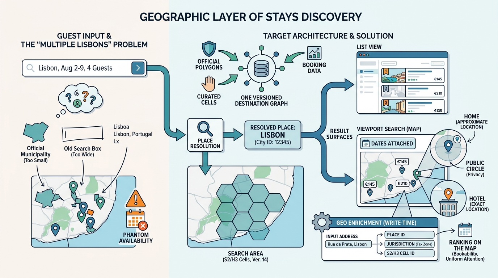

Part IV — DISCOVERY: From Intent to Bookable Stay
Where Exactly? Destinations, Geo and Map Search

Image generated by Google Gemini (gemini-3-pro-image-preview)
Part IV — DISCOVERY: From Intent to Bookable Stay

Image generated by Google Gemini (gemini-3-pro-image-preview)